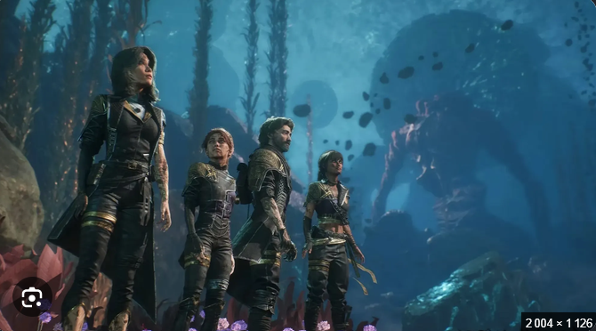
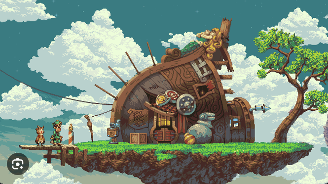
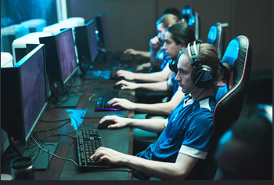

Les RPG de l'année
Publié le

De Clair Obscur aux grands nommés des Video Game Awards, tour d'horizon des meilleurs jeux de rôle qui ont marqué cette année.
Bienvenue sur le site dédié à l'actualité vidéoludique, aux RPG et aux créations indépendantes.
Retrouvez nos tests
chaque semaine sur console et PC.
Publié le

De Clair Obscur aux grands nommés des Video Game Awards, tour d'horizon des meilleurs jeux de rôle qui ont marqué cette année.
Publié le

Loin d'être une simple mode rétro, la 2D et le pixel art offrent aujourd'hui aux studios indépendants une direction artistique d'une richesse incroyable.
Publié le

Des arènes survoltées de League of Legends aux tournois nerveux de Puyo Puyo, la scène compétitive continue de battre des records d'audience.
Publié le
Des thèmes inoubliables de Nobuo Uematsu aux grands concerts symphoniques, comment les bandes originales donnent une âme aux jeux vidéo.